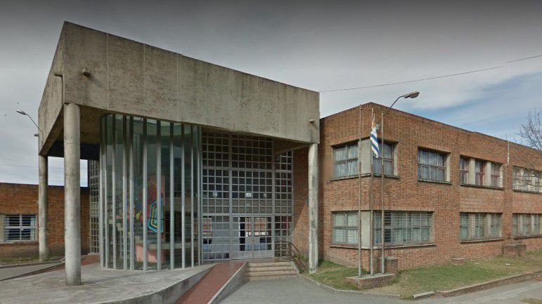

Educación que ilumina.
Las noches se llenan de aprendizajes, historias y sueños que siguen creciendo. Acompañamos a jóvenes y adultos que eligen superarse, creando juntos un lugar donde estudiar también significa creer en uno mismo.

Las noches se llenan de aprendizajes, historias y sueños que siguen creciendo. Acompañamos a jóvenes y adultos que eligen superarse, creando juntos un lugar donde estudiar también significa creer en uno mismo.